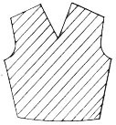
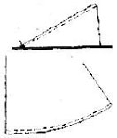
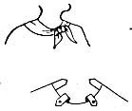
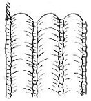
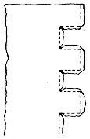

1936—Home Sewing Course
by Helen Hall
Series 6—Materials—Trimmings
Materials
Be cautious when cutting
It is necessary to be more cautious when cutting some materials than when cutting others, as the one way materials, plains and stripes, large floral patterns and napped materials develop complications different from plain material. The goods should be examined and the arrangement of the pattern fully understood for the type of material before the material is cut.
When in doubt
When in doubt as to whether the material has an up and down, it is advisable to place all the sections of the pattern with the top of the pattern to the top of the goods. Many pattern layouts are arranged in this manner so that they will apply to one way material. It is advisable, however, to determine the correct placement of each piece before cutting even the first section. If a layout shows pieces reversed, it is intended only for use when cutting a fabric without a distinct up and down.
Never compromise
Never compromise on the lengthwise thread when cutting intricate materials. It is advisable to piece an inconspicuous corner rather than to cut one section upside down. More of this type of material is required than material on which the pattern can be reversed. This should be borne in mind when the good is purchased.
Different surface
All materials that have a different surface on the wrong and right side will be easily detected. If all the pattern is laid out right side up and all placed in one direction before the material is cut, it will be easier to avoid errors in cutting. Cutting this material one piece at a time often leads to tragic results. Place all the pattern on the goods before cutting and carefully check the number of pieces.
Up and down prints
Study figured prints to determine if the figures all run one way or if some of them are upside down. If all the designs are one way, then all the pattern must be placed one way on the goods. If some of the designs are upside down, then the pattern can usually be placed either way. Small designs are usually reversed and can be cut either way, but be cautious when cutting large floral patterns. These must also be placed correctly on the pattern. Large plaids also require caution. Nap materials will also have a decided up and down and must be cut with all sections placed with the top of the pattern to the top of the material.
Diagonal weaves
The diagonal weaves, such as serge materials, have a decided twill running diagonally across the material. There are many striped materials that are also printed with a diagonal stripe. If this stripe is not understood, some of the sections may be cut incorrectly, and if the material is turned to the wrong side, or it cut crosswise, the stripe will run in the opposite direction. The pattern, however, can be turned upside down and the diagonal will remain the same, but the pattern cannot be placed on the crosswise or on the wrong side unless the stripes are supposed to converge on a center line. It will then be necessary to change the thread of material for cutting. (See rules for stripes.)
All diagonal weaves will run from the high left to the low right; from the left shoulder to the right hip. If undecided as to which is the correct line, hold the piece up to the body and follow this rule for the right side. The diagonal lines will follow this rule on all sections of the garment.
When cutting bias strips for binding, be sure to make all the lines of the diagonal run in the same direction with the lines running short across the bias strip.
Large floral patterns
Large floral patterns should be cut with the pattern placed down the center front and back or else placed symmetrically on each side, measuring from the centers. The same is true of cutting large plaids; the center of a large block should be placed in the center of the section. Select the dominant figure and plan the pattern around it. Hold the goods up to the figure and determine the desired effect. A large figure should come below or at the sides of a neck line. The general effect of the placement of the figures determines much of the effect of the finished garment. This type of material requires more material for the matching, and it is advisable to purchase an additional quarter or half yard of material.
Stripes and plaids
There are many lessons that should be understood before attempting to make a striped or plaid dress. Much of the beauty of the garment depends upon the perfect matching of converging lines of the stripes. The lessons on right side basting will be valuable for reference.
Work out some of these problems before making the garment.
Study the plaid or striped material
Many plaid materials have a decided up and down; two sides of the plaid will have heavier stripes than the other two sides. This uneven plaid must be cut with all the heavy stripes at the bottom of the pattern and all stripes must join on the seams. Materials with variegated stripes or the Roman striped material should match on the dominant stripes, as it will be impossible to match all stripes of the pattern.
Select the pattern
Select the pattern for a striped or plaid dress with the pattern illustrated in stripes if converging lines are desired. If a plaid pattern is selected it is advisable to pencil mark the lines of the stripes on the tissue pattern before cutting the garment. Only a few lines are necessary, sufficient to determine the correct line to use for cutting. The line of the stripe can be marked in preference to the lengthwise thread of material as is usually found. Also mark the lines on the illustration. If the pattern illustration gives a definite line for the stripes, and some of the lines are to be changed, it is advisable to pencil mark both the new lines on the pattern and also the lines on the illustration.
Piecing stripes
It is often necessary to piece the corners of material that is cut on the bias. This is especially true of cutting converging lines in the seams of striped dresses. Stripes and plaid can easily be pieced if the rules for right side basting are followed. The piecing will then be inconspicuous.
Cutting stripes and plaids
When cutting stripes and plaids it is advisable to cut single sections rather than to cut double as is generally the rule. Plan the cutting carefully; then cut one side of the dress if the center has a seam. If the pattern is placed on the right side of the material when cutting the first section, turn the goods to the wrong side and place this same pattern with the goods pinned to it for the matching section, pinning it to the matching stripe on the wrong side of the goods. This will put the wrong sides of the goods together; they will match on the center seam if the pattern has been placed so as to match the stripes.
Wasteful
Cutting stripes and plaids is often wasteful, as the pattern must be drawn down to match the lines of the plaids. If the plaids are widely spaced, it may be necessary to waste several inches of the material for a perfect match. It is also advisable to cut wide seams for stripes and plaids, as it is sometimes necessary to slide the seam over to match a stripe. It is therefore advisable to purchase extra one-quarter to one-half yard of material if wide stripes and large plaids are to be used.
Matching side seams
The side seams of stripes should also match. This makes the cutting even more difficult, but the perfect matching makes the garment attractive and is well worth the effort.
Let us assume that the back of the skirt has been cut first. Do not remove the goods from the back pattern. Press over the seam of this back section at the sewing line and place the pattern on the matching section of the front of the skirt, placing it at the sewing line of the front pattern. Then pencil mark the same stripe on the front of the pattern marking the dominant stripe or some definite stripe for identification when cutting. Make at least two sets of pencil marks for the stripe line on the pattern and also mark the direction in which they will run.
Cut the front
The front of the skirt will then be ready to place. Slide the pattern up or down on the goods so as to match the pencil mark to the correct stripes. Pin carefully, matching the pencil-marked stripes. The second stripe is as important as the first stripe; it will determine the slope of the material and pattern. Cut one section only; after the first one is cut match it to the back and cut the other side as directed for cutting the back.
Joining seams
Stripes and plaids should be basted before stitching and checked to determine the correct matching of the stripes. This can best be accomplished with the right side basting rules or by pressing back one side of the seam and slip stitching the seam from the right side. All stripes should match perfectly.
Sheer materials
Sheer materials are often difficult to handle. The stiff shears such as organdy weaves will retain their shape to a certain extent and will be easier to sew than the soft shears such as chiffons, georgetts and voils. It may even be necessary to first baste the goods to paper before stitching the seams. In this case a large table is necessary to be able to hold the material to its original shape for the pinning. The pattern should remain on the goods until it is pinned. If paper is not used it is advisable to place the pattern onto the basted seam to test it for perfect length before stitching. If this is not done the seam may be stretched out of shape when stitched, and the effect of the dress may be ruined. This is often the case when sewing bias edges. It may be necessary to machine stitch the raw edges of all bias edges before they are basted. This is often helpful when making drop shoulder yoke effects, stitching the edge to hold the shape. The original pattern can be stitched into the seam and then be torn away.
Sheers stretch
When cutting small sections of sheer material such as bias seam binding, it is advisable to pin the goods to a paper, straightening the material to its original thread before cutting. The lines of the newspaper can be followed to secure the straight thread of the goods. Sheer material stretches when cut and it is advisable to test the necessary width so as to allow for the stretching after it is cut. When cutting with paper, cut through both the paper and material.
Sheers sag
Allow ample fullness at the lower edge of the skirt when cutting from sheer material, as the bias of sheer material sags greatly. This sagging will reduce the fullness of the skirt. A skirt pattern that is only slightly circular on heavy material may be perfectly plain and straight if cut from sheer material and may not look like the pattern picture. If a circular skirt is to be full and is to be cut from sheer material, measure the lower edge of the skirt and if it is not amply wide, increase the fullness at the lower edge by splicing and spreading the pattern. Spread the pattern on the bias section only. It is advisable to ask the pattern saleswoman if the pattern is designed for sheer material--or ask the width of the hem of the skirt.
Basting
All sheer material should be basted flat on the table; never in the hands if the seams are long. Place the more bias section on top. Straighten each edge to its original shape and pin to place, then baste flat.
All short seams should be pinned together as they lie flat, matching the ends of the seams first and then pinning in the centers. Be sure to match all notches when basting with shears, as the bias edges will soon lose their shape.
Stitch with paper
It is sometimes difficult to machine stitch sheer materials, as the seam will pucker. Baste a strip of tissue paper along the seam and as the machine stitches over the paper it will separate and can easily be removed.
Neck lines of sheers
Neck lines and curves of sheer fabrics should be machine stitched around the raw edge before the finish is applied or the matching seam joined. Hold the material straight on the straight thread of the goods when stitching. (See machine stitching.) Test to determine if it lies flat after it is stitched. Slide the basting board into the neck. A magazine can be used if the basting board is not at hand.
Sheer hems
Hems on sheer material are made narrow. They can be picoted (cutting away half of the hemstitching) or the hem can be rolled by hand.
Narrow hems on sheers
Stitch the hem as close to the edge as possible. Do not turn under the edge. Trim off any frayed threads, roll under the edge and slip stitch the hem, trimming off a few inches ahead of the hand sewing. Trim to an eighth-inch from the machine stitches. If the edge is trimmed closer and rolled smaller it will be possible to make a very small hem. Catch the end of the hem to the basting board with a pin and then make a tension on the hem as it is rolled. Push under the edge with the point of the needle and the hem can be made as narrow as desired.
Inside finish of sheers
Good dressmakers finish the seams of shears, for the garment will be transparent. All seams can either be hemstitched and trimmed on the outer edge of the hemstitching or one edge can be turned over the other edge and slip-stitched to place or can be hemstitched for a finish. French seams may be used by the expert seamstress.
Nap and pile
Materials such as velvets and broadcloths have a rough surface of threads. The threads are either long and pressed flat which makes a pile fabric as in broadcloth, or the threads are shorter as in velvet, making a nap fabric. They may be very short as in velour and have no distinct up or down.
Pile fabrics
The difference between nap and pile can easily be detected as the hand is rubbed back and forth over the surface of the material. Pile fabrics roughen easily. The surface also becomes darker when roughened as does the surface of an Axminster rug when brushed against the pile. Camel's hair coating also has a decided pile to the fabric and should all be cut with the pile running down on the material.
Nap fabrics
Napped materials have a shorter thread, which makes it more difficult to determine the correct way for cutting; the nap must run up. It requires experience to easily detect the feeling of napped material as the hand is rubbed over the goods. The difference can also be seen if the material is draped over a chair, using both ends of the material for the draping. One end will appear much darker than the other end, it is the darker material that is draped correctly. All velvet weaves should deepen the sheen of the fabric. The reverse material can be used as a contrasting trimming but the garment should be cut with the darker sheen. Cut all napped material with the nap running up.
Velveteen
Velveteen has a nap that should run up. It is clipped so close that it is difficult to detect the correct way for cutting by feeling with the hands. Drape material to determine the darker sheen which will be the correct way for cutting.
Velour weaves
Velour weaves have a rough surface but there is no sheen to the material and can therefore be cut either way. A safe rule to follow, however, is to cut all napped material with the nap running up.
Tailor's variation
The tailor often cuts plain napped material on the crosswise thread of the goods for economy in cutting. As coating is 54 inches wide this is possible if the material is thoroughly understood. The width of the goods can thus be used for the length; the sheen is not apparent and the pattern can be placed to better advantage. The tailor often uses insets of the reverse material on widely spaced seams. This can be tested on scraps to determine the effect desired.
Satin
Satin material should be well-tailored. Satin cannot be ripped and altered as easily as other materials and should therefore not be attempted by the amateur. Marks of stitching and pressing are often difficult to remove.
While satin does not have a nap or pile, it does change in the sheen on the crosswise thread and can be self trimmed beautifully. Drape the goods over a chair both lengthwise and crosswise and detect the darker and lighter shades of the goods. The lighter shade will be on the crosswise of the material. The garment is always cut on the lengthwise but can be trimmed on the crosswise. Mark any yoke or trimming sections that are to be changed when cutting. Draw new "lengthwise thread of material" on the pattern section that will be changed.
Velvets
Velvet is cut, basted, marked and pressed differently from all other materials. The amateur should not attempt to make a velvet garment without first understanding the material. Upon the correct handling of velvet depends the success or failure of the garment. If handling velvet is a new experience in sewing it is advisable to make a few samples of the various problems before the garment is made.
Up and down
There is a decided up and down to the velvet. It is cut with the nap running up which makes the garment darker in sheen. Definitely determine the top of the material and place all sections of the pattern with the top of the pattern to the top of the velvet.
The pattern
The pattern should be pinned to the wrong side of velvet when cutting. This will reverse all printed patterns as they are printed right side out. All marks should be made on the lining of the velvet which will necessitate cutting from the wrong side. As velvet does not fold to a keen edge, a center mark should be made with chalk before the material is folded, if directions are given to cut double. Single cutting is advisable. Chalk-mark the sewing lines, tailor-tack all darts, tucks and folds. There should be no pressed pleats in velvet as the pleat will flatten the material when pressed.
Pins
Pin all velvet seams with many pins. When the seams are pinned together place all pins slanting to the sewing line, placing the point of the pin on the line. This slanting pin will assist in preventing the material from sliding. Pin all sections together with the material flat on the table. Match the sewing lines carefully. The full length of the seam should be pinned before it is basted. Match both ends of the seam and pin closely as the material will slip when basting.
Dressmaker's basting
Baste velvet with close dressmaker's bastings. The seams of velvet will slide when machine-stitched; time may be saved if the whole dress is sewed by hand with buttonhole twist or heavy sewing thread. The sewing should be back stitched every few inches to hold firmly in place. If the machine is used, it is advisable to loosen the tension.
Finishes of velvet
All finished bindings, facings and hems of velvets are made by hand. All finished edges are not turned under in velvet but are cross-stitched down or finished with ribbon seam-binding. Narrow seams, such as seams under a facing or binding, are pressed open with the fingernail and are not steamed. A velvet facing is sometimes held back with an invisible running stitch to hold it flat. (See "waist finish.")
Pressing
Velvet is not pressed flat, it must be steamed or pressed with the thumb nail or on a needle board. (See rules for pressing.)
Questions—Materials
- Are some materials more difficult to sew than others?
- What materials are more difficult?
- Should handling the material be understood?
- When in doubt what should be done with the pattern?
- Does some material require more material for cutting?
- Should material be studied for an up and down?
- How does a diagonal line on material run?
- Can a pattern be turned up-side-down on diagonal?
- Does the crosswise and the wrong side affect the diagonal line?
- How is a bias on diagonal cut?
- Where should large figures in floral designs be placed?
- Will the lesson on right side basting be helpful in plaids?
- Do some plaids have an up and down?
- Which part of the plaid is down?
- Which stripe is matched in Roman stripes ?
- Should a plaid pattern be selected for a plaid dress?
- If plaids are not illustrated what should be done to the pattern?
- Can stripes be pieced inconspicuously?
- Should plaid sections be cut single or double?
- How are striped sections matched for the cutting?
- How is the striped skirt cut?
- How is the pattern marked?
- Is the sewing line or the cutting line matched?
- How can sheer material be held in place?
- Does edge stitching help when making drop shoulders?
- How can bias be cut for shears?
- How can extra fullness be allowed in shears?
- How should sheer material be basted?
- Is the more bias section on the top or the bottom?
- Are the ends of the seams pinned before basting?
- How can sheer material be held on place for the stitching?
- What can be done to the necks of shears?
- How can sheer hems be rolled easily?
- How are sheer seams finished?
- What is the difference between nap and pile?
- How does the nap run on most material?
- What are the two ways of detecting the direction of nap?
- Does velveteen have a nap? How is it cut? Velour?
- What is the tailor's variation for cutting nap?
- Can satin be altered easily after it is pressed?
- Can crosswise satin be used for a trimming? Why?
- How is velvet cut? How is the pattern pinned to it?
- Are pleats pressed into velvet?
- How are pins placed in a velvet seam?
- How is velvet basted? How can time be saved in sewing?
- Are all finishes on velvet made by hand or machine?
- How can small seams be pressed open?
- How is the faced edge held in place without pressing?
- How is velvet pressed?
TRIMMING SUGGESTIONS
Trimming suggestions are given with patterns but it is not always possible to use a pattern. A clever touch of trimming on a remodeled dress gives the touch of interest that is so desired and often eliminates the possibility of a "home made" look.
Contrasting materials
Contrasting material of plain color is often used in various ways as a trimming, possibly matched with buttons and a belt buckle. It may be worked into the dress in collars and cuffs, with scarfs or bows, a yoke and sleeve portion, or possibly the whole sleeve is made of contrasting material. Insets and godets, pleated sections and ruffles, or possibly the whole upper portion of the waist.
The trimming material may be of the same quality as the material of the dress or of lace. It is advisable to purchase the trimming when the material is purchased as most stores stock contrasting colors for their fabrics. The color contrast varies with the seasons. If a garment is to be remodeled, it is advisable to match the material and the trimming. Sales people will offer excellent advice if it is requested.
Twin fabrics
Twin fabrics make an excellent trimming. Printed fabrics such as polka-dots are made in twin materials, one has the dark background with the light dots and the other HAD the light background with the dark dots. The dark background material is usually made into the dress, and is trimmed with the other material, using the latter for collar, cuffs and revers, belts and ties.
Net material can be used effectively for yokes and sleeves. It can be trimmed with folds of the dress material stitched in uniform width across the net or can follow in equal widths around the neck line of the yoke.
Matching figures
If the material is figured, the trimming material should match the one of the colors of the figures; the color most becoming to the wearer should be selected. If the color is bright, a small portion is usually all that is necessary to use. Too much color may ruin the effect of the garment. Do not overtrim the dress.
Bright colors
A touch of bright color can be added in various shapes and sizes of buttons. Colored seam binding can be used in various ways, such as stitched tape for lacing through bound buttonholes. and colored edge on neck lines and sleeves. Tape can be faggoted together to make fancy shaped collars and cuffs, cutting a heavy paper pattern and basting the tape to the paper in rows. Tape can be stitched in lattice effect in sleeves or yokes to form a trimming.
Hand faggotting
Narrow braids are usually faggotted with hand work. The braid is basted to the pattern, leaving a quarter-inch space between the rows. Use embroidery thread or knitting silk or heavy buttonhole twist, depending upon the effect desired. The stitch can be made as a feather stitch, working from left to right, making it cross in the center, or can be made straight across the opening, catching the thread to the opposite side and winding the head of the needle around the thread back to the beginning of the stitch.
Faggoted yokes
Small figured material can be trimmed with a plain colored faggoting either of faggoted braid or made by hand with the same stitch as just described. This makes a most effective trimming as the outline of the cut of the dress is outlined with the openwork of the faggoting.
Braid applied
Faggoting braid can be purchased by the yard at a reasonable price. The edge of the seam is basted to paper and the faggoting is basted under the edge of the material as it is folded back. Be sure to fold back more than the regular seam allowance or the garment will be too large. The center of the braid will be the center of the seam. The full seam allowance can usually be cut off before the braid is set in. After the braid is basted to the seam it is flat-stitched to place from the right side.
Buttons
Buttons make an attractive trimming for many dresses. If the dress is light the buttons can be darker or if the dress is figured the buttons can be selected to match one of the colors. Large buttons and small buttons, oval ones and round, bar shaped and square, made of metal or glass, of bone or wood, carved and filigree, buttons covered with the matching material, either made by machine or covered by hand--there will surely be a button to suit the purpose. Buckles are often made to match the buttons and can also be covered with cloth. (See lesson on buttons.)
Bound buttonholes
Bound buttonholes make a smart trimming for many tailored types of dresses. They are bound with material either like the dress or of a contrast. Usually the button furnishes the contrast and the buttonhole is bound with the same material as the dress. When one buttonhole is used, as a slot opening through which a tie or scarf is drawn, it is often bound with a contrasting material. A row of bound buttonholes furnishes a smart trimming for many tailored dresses. (See lesson on bound buttonholes.)
Ties
Ties also make a clever trimming when cleverly placed and are made correctly. Ties can be stitched into the shoulder seam and knotted at the side, front, or the back. Ties can be looped into a flat ascot tie at the throat or can be slipped through loops that have been stitched into the neck line or cut into the neck line of the dress.
Two buttonholes can be placed close together and can be used for an excuse to hold a bow tie, or a tie can be caught to the neck line and drawn through these buttonholes. Ties can be made of two different colors or two shades of the same color. They can be seamed at the center back, brought to the front and made into a tie of two shades.
Ties can be caught at the neck line with metal clips or can be run through slides which will also ornament the dress. Ties can be made as cords and laced through buttonhole slots or metal eyelets that can be punched by the button maker. Cords can be made from braided loops and either tied or used as a necklace.
Cutting ties
Ties should be cut correctly or they will not hang gracefully. Material for the ties should be cut on the lengthwise of the goods or on the bias; never cut a tie on the crosswise thread. Ties can also be cut on a true bias if they are wide but they will reduce in width as they are stretched in the tying. A tie that is to be washed should be cut on the lengthwise rather than on the bias, especially if it is made double. A double bias tie will not press perfectly after it is washed.
Cut ties with ample fullness if they are to fall softly; thin, narrow ties are not effective. They should also be of ample length; the sheerer the material the wider the tie should be cut. When ties are cut double they are made rather narrow and are either looped or tied in a flat bow.
Make a sample
It is sometimes advisable to make a sample tie of similar material to secure the desired effect before cutting the goods. It will then be possible to secure the correct length and width; an inch extra on the width makes a difference and a tie too short might ruin the dress.
The layout
Plan the layout of the tie when cutting the dress. There is usually ample material for a tie if the correct length is planned when cutting the dress. Long ties cut on the bias may be pieced in the knot or at the back, but the piecing must be made along the lengthwise thread of the material. This will be on the selvage of the goods. Never piece a tie across the bias of the tie. Press the seam open and flat. French seam if the tie is of one thickness.
Finish of ties
Ties can be finished on the edge with a piquot made by splitting hemstitching. They may also be hemmed by hand or with the narrow machine hemmer. Bias ties should have the, raw edge stitched on the machine to hold it firm for the turning. A smaller and neater hem can be rolled if the edge is stitched. Do not turn under the edge, but stitch it an eight-inch from the cut edge.
Scarfs
Triangular sections of material similar to half of a diagonally folded handkerchief, can be used as a scarf, tied either at the back or the front. Two sections can be tied together at the back of the neck and overlapped into a vest effect.
Tying a bow
There is a trick to tying a bow perfectly. The knot overlaps one section only and should not be twisted. The two loops should be at the top of the bow and the two ends at the bottom with the cross loop straight down from the bow between the two loops.
Overlap the two ends, bringing one end up to the top; this end will be used for the cross loop. Draw the two ends as close as they will be drawn in the tie, drawing the two ends at right angles to the circle, one end straight up and the other straight down. Make the first loop with the lower end, bring the upper end down over the loop and push it through the tie to form the second loop, draw up to position. The top section makes the overlap. Practice tying a bow around a vase or some small object; it may require some practice to understand how it should be done. A man's bow tie is tied in the same manner. Practice tying friend husband's tie.
 Tailored bow
Tailored bow
A tailored bow is often used as a flat trimming; it is cut in sections and sewed to position with formal folds at each end. Velvet ribbon or double silk sections make excellent tailored bows. They require no lining, lie flat and are very effective, at the side of the neck line or in the center front. Bias strips can be made double with the seam down the center on the under side of the fold. The edges will not be pressed but will remain soft. Heavy material such as crepe and velvet make excellent tailored bows.
Cut the strips on the true bias of the material or a lengthwise, cutting the strips twice as wide and twice as long as the single loop. Two loops are used on each side.
The cross section will be half as long as the loops. Stitch each section together and turn. Do not press the seam open nor press the edges. Fold the seam down the center of the loop. Overlap the end with a fold or pleat in the center and pin to place. Do the same with the other end of the loop. Tack the two ends with the folds with the needle and thread. Make the other loop in the same manner. One continuous piece can be used if so desired. Repeat the same operation for the second two loops. The under loops can be a trifle longer than the loops on top if so desired. Fold in the edge of the cross tab, sew to back of the loop, bring over and cover the front and finish at the back. The bow is sewed together and not tied.
Pleating
Pleating is effectively used for trimming. It is often made on a matching or contrasting material. The pleating can be made very narrow and used as an edge trimming on revers, collars, cuffs and various portions of the dress. Narrow pleating is steam pleated by machine; it should be hemstitched for an edge finish before it is pleated. (See lesson on pleats.) Narrow pleating may be shirred across the top in several rows.
Sunburst pleats
Sunburst or fan pleats can be made at home and are very attractive. They can be used as insets on skirts, in sleeves or on revers.
Make a paper pattern of the pleats or a sample. Fold square of paper so as to cut a circle. Split the circle through the center, making but half a circle. The circle should be folded in many sections. Unfold the paper and fold it up as a fan, reversing the creases that are folded the wrong way.
The material
The pleated section of the material will be cut and folded in the same manner. The hem must be made before pleating. Allow for the seams at the sides. Fold up the goods and baste the outer edge of each pleat. The under edge will be automatically pressed to place when the pleats are pressed. Reverse all pleats necessary to make the fan. After they are all basted, fold all the edges even and over-cast together for a final pressing. Press with moisture so they will be steamed to position. Remove the bastings and the perfect fan pleat is ready to set into the garment.
Godets
A godet is a segment of a circle used as an inset in the garment, usually in the skirt. It is shaped like a "piece of pie." The lengthwise thread of the material is usually placed down the center of the godet with the sides on the bias. This will give an additional fullness to a narrow skirt, setting the godet into a slash on both sides, or it can be used to give added fullness on a sleeve or revere collar effect.
Long sections of material can be utilized by joining them with godets. This will make long circular sections that can be used for skirt tiers, or can be used to give additional length to a skirt. It can also be used to make long flared revers for the surplus neck opening or for sleeve trimmings.
Jabots
Scraps of material can be used as jabots, shirred at the side, corded in several rows or caught to the garment on the center with a metal clip. The jabot will be the dress trimming. It can be made of lace, or scraps of lace stitched together, a bit of embroidery material with a piquoted edge or a fancy colored handkerchief gathered through the center either straight or on the bias.
Jabots can be made in various shapes and sizes. They are used as a trimming in the front of the dress at the neck. They are usually made of soft materials--often of lace. They should be quite full so as to fall in graceful folds. A circle can be split to the center, finished on the cut edge, gathered across the center and caught through the center with a long clip, the points held up on the dress and a butterfly is made. A circular lace piece makes an excellent jabot of this type.
Collars—cuffs
Vests, cuffs, collars and revers can be made with varied fullness as a trimming. They may be tucked from the seam for a few inches, ending in a ruffle, making the tuck on either the right or the wrong side of the goods. Several rows of shirring can be used in the same manner or the shirring can be corded. A space can be shirred and an inch left plain within another row of shirring before the material remains free in a frill.
Darts
Darts can be made in collars and cuffs to add fullness. They can be made on either the right or the wrong side. Use a straight piece of goods. The point of the dart is at the joining seam of the collar or cuff and it will be stitched only a portion of the depth of the collar with the end puffing out into fullness. This dart can be set into a plain collar or cuff pattern, splitting the pattern and spreading it twice the width of the dart, about one inch for each dart.
Shirring
 Shirring makes an effective trimming. It is used in many parts of the garment.
A straight-across wide strip of material can be shirred for a collar or cuff,
material can be shirred for the top of a sleeve and the plain sleeve pattern
used after the shirting is made.
Shirring makes an effective trimming. It is used in many parts of the garment.
A straight-across wide strip of material can be shirred for a collar or cuff,
material can be shirred for the top of a sleeve and the plain sleeve pattern
used after the shirting is made.
To make shirring by machine, loosen the top tension, stitch several straight flat rows of stitching with the material right side up on the machine as it is the lower thread that will be drawn up. Keep the thread from tangling on the under side.
After all the rows are stitched, turn to wrong side, and tie the threads on one end, testing each thread to see that it is knotted. Pull out the under thread of all the rows, even them up and wrap them all around the finger and gradually push up the gathers to the desired fullness. Drawing them all up at once diminishes the strain on any one thread and prevents them from breaking and also makes an even fluting of the gathers.
Machine fluting and pleating
Use the gatherer of the sewing machine for making wider fluting and small pleating. Loosen the top tension as this thread will be removed later. Make two or more rows of gathering the desired fullness. For pleating, make the rows one-half inch apart. Press flat, remove all the stitching but the first row and the material is pleated. Leave two or more rows in and it will be fluted between the rows.
Corded shirring
Corded shirting is effective especially on velvets and collars. Various effects can be secured with cording. Make several rows of tucks on the right side of the material. They should be made by hand on velvet. The tuck must be sufficiently wide to take a cable cord at least one-eighth inch thick. Mark the rows so that they will be evenly spaced. The cable cord can be purchased at a notion counter. Wrap the end of the cord with thread and sew this end to a bodkin and draw the bodkin through the tuck, making it longer than the desired length of the finished portion. Cut off the cord and draw through the other cord sections. After all the cords are drawn through the tucks, draw them all up to the pattern shape. They should all be shaped simultaneously so as to pull the shirring crosswise.
Puffed shirring
Shirring can be puffed for velvet coat collars or for pillows and various trimmings.
Draw up the cords as previously explained in corded shirring, then baste the outer edge of the shirring to a cloth pattern of the collar. Place a small roll of cotton sheet wadding under the puff and sew the second row of cord to place holding up the puff. Continue to the full size of the collar.
Lace trimmings
Shaped yoke effects can be purchased to be used as insets on dresses, the outer edge is stitched to the garment and the material is trimmed away underneath. Many smart lace effects are offered for lingerie, shaped sections of lace can also be purchased for inset trimmings.
Narrow lace
Narrow lace may be used for many purposes. There is a heavy thread that runs through the top edge that can be drawn up as a gathering thread. The lace is then either stitched on for the right side with the lace on the wrong side or felled on by hand.
Scallops
Scallops make an excellent trimming on the edges of revers, collars, cuffs, and often on hems. The facing is made like the outer section, cutting it on the same thread of the materials.
Cut a paper pattern of the collar or hem.  Fold the edge into an evenly spaced
division of the length, judging the size of the scallop desired. Select a
dish or small object a trifle larger than the space, as the scallops do not
run to a sharp point at the joining. Mark the scallop on the folded paper
and cut it out. The edge will then be marked for the full length of the material.
Pin the paper to the goods and pencil mark around the edge of the scallops.
The corners should be a semi-circular. The points at the joining can be marked
off with a pencil mark, reducing their depth. (See illustration.)
Fold the edge into an evenly spaced
division of the length, judging the size of the scallop desired. Select a
dish or small object a trifle larger than the space, as the scallops do not
run to a sharp point at the joining. Mark the scallop on the folded paper
and cut it out. The edge will then be marked for the full length of the material.
Pin the paper to the goods and pencil mark around the edge of the scallops.
The corners should be a semi-circular. The points at the joining can be marked
off with a pencil mark, reducing their depth. (See illustration.)
Baste the facing to the collar. Machine-stitch the shaped scallops to the facing, using the machine needle as a pivot when the point is reached. (See lesson on machine stitching.) Trim the seam very close, clip the point and turn, baste the edges closely, and press.
Battlement trimming is made in squares instead of scallops and also makes a trimming edge for plain collars. Even up the space as for scallops. Mark off the squares, making the lines evenly spaced. Stitch to the shaped facing in perfect points, trim the seams, clip the corners, turn and press.
Flares
Flared collars, cuffs, reveres or skirt tiers can be added to the dress by cutting squares of material, folding double into a smaller square, slashing open one side, cutting a small circle from the point, one-quarter of the length to be covered with the flare. Open the piece and there will appear a rippled flare with four points. The corners can be cut off to form a circle.
Appliquet
Appliquet makes an effective trimming on children's cloth aprons, pillows and many novelties. These appliquets can be traced from animal pictures or can be made of overlapped circles. The appliquet is cut from bright colored materials. The raw edge is usually sewed to the garment with small stitches and then is blanket stitched around the edge with embroidery floss.
Tube trimming
Corded tubes, made like tailored loops, of the material or of a contrasting color, makes an effective trimming for ties, braided belts, a necklace caught in the back with a clasp or frog, or lapped in the front with a tassel. Smaller strands can be looped and grouped together to form a shoulder or neck cluster for an ornament. The material is made as directed for making loops on the lesson on "tailored loops."
Stitching
Flat stitching often gives the trimming for tailored dresses. (See rules for flat stitching.) Collars, cuffs and belts are often filled completely with rows of stitching. (See lesson on belts.) The part to be stitched must be made of even width and must be stitched with even rows of stitching to be effective.
Floss stitching
Fancy stitching can be made with floss, or knitting silk. It can be made in straight rows or can be stitched into squares or diamond shapes. All lines should be marked on the wrong side of the goods for the stitching or a true gauge is used.
Wind the bobbin of the sewing machine with heavy floss. Loosen the upper tension only and stitch from the wrong side. The effect will be similar to embroidery, the upper thread can be of a different color or black to make even a more effective trimming. Bands stitched in squares for Tuxedo fold on a coat of silk with cuffs and pockets to match is most effective. A collar or yoke stitched with several rows of floss also is effective. Belt tabs and trimming insets can also be made. It is advisable to practice on a sample before stitching the garment.
Hemstitched strips
Attractive organdy trimming can be made by hemstitching two or more colors together, using narrow strips of equal width, and stitching them into a seam. The hemstitching is then split into a piquot edge and will not be visible. Collars, cuffs or sash ends can be made in this manner.
Home hemstitching
Hemstitching can be made at home. Folded tissue paper can be placed between the material of the seams. Both tensions should be loose. The paper is removed after the seam is stitched. The sides are then pressed back and stitched at the edge.
Homemade appliance
A hemstitching appliance can be made at home by a handy man. (See illustration.) Use an eighth-inch heavy wire, bending the ends into a double bar, very close (one-eighth inch) together. It should be six to eight inches long.
This bar is placed between the two edges of material on the seam when stitching and the needle travels between the two sides of the bar. The curved end is out in front and the open end of the bar is under the presser foot so that it can be drawn through the material as the seam progresses. Better results will be secured if the two edges are first stitched together plain, then the bar is used as close as possible to the first stitching. This makes it possible to make the hemstitching more evenly spaced.
After the seam is finished, pull out the outer stitching, trim off the outer seam, press. back the sides and flat-stitch the edges. Various effects can be secured by practice.
Tailored pockets
Tailored pockets in dresses make an effective trimming. (See lesson on pockets.) Pockets and bound buttonholes will be all that is required to take the dress out of the homemade class.
Velvet
Velvet or velveteen is often used for collars and cuffs on tailored dresses, often in a contrasting material. It is advisable to understand the handling of velvet before using it for trimming. (See lesson on materials.)
Fur
Fur is used for trimming in various ways, often in banding.
Fur is used in small quantities on a dress. A touch of fur is all that is required for smartness.
Flowers
Flowers can be made of material to be used as an effective trimming. They can be made of organdy or silk, of ribbon or of various crocheted effects. The material folds and rolls beautifully on the bias. The easiest and most effective quick flower is made from a square of silk, folded cornerwise, gathered across the corner and drawn up into a cup shape. Several of these petals are made and overlapped into a bud.
Questions—Trimming Suggestions
- Should contrasting material be of the same quality as the dress?
- Should trimming of contrasting material be purchased with the dress ?
- What color should be selected for the trimming?
- Should a great amount of bright color be used?
- Where are the bright colors used?
- How is faggoting used?
- What are the different kinds of faggoting?
- How are buttons used?
- Where are bound buttonholes used for trimming?
- When and where are ties used?
- How are ties cut, pieced and finished?
- How are scarfs used?
- How is a tie tied?
- Which part is brought to the top?
- Which part makes the first loop?
- How is a tailored bow made?
- How is pleating used?
- How can sunburst pleating be made at home?
- What are godets? When and where are they used?
- Of what are jabots made?
- How can varied fullness be used in collars and cuffs?
- How is sheering made and used?
- How is puffed sheering made?
- How is lace trimming used?
- How is narrow lace gathered?
- How are scallops marked and finished?
- How is appliquet made and used?
- How can tube trimming be used?
- How can flower trimming be used?
- How can hemstitching be used for a trimming?
- How can a hemstitching appliance be made?
- How can silk flowers be made?
SEWING COMMERCIALLY
Why dressmakers fail
There are many women who desire to earn money by sewing but realize that they do not have sufficient knowledge of the subject to enable them to conduct a profitable business. The amateur dressmaker often makes a failure when she sews by the "hit-and-miss" method. She does not understand the fitting problems encountered and through her errors her profits are "ripped" away and she finally loses her best customers.
It is surprising how quickly a customer will sense the inability of the dressmaker even though she may know nothing about sewing. She at least knows how clothes should look and should "feel", as perfect fittings always insures a comfortable dress. A misfit dress may "look" right but may "feel" most uncomfortable and the customer will never return. Therefore the dressmaker must understand her business.
How to succeed
Success in sewing commercially is not in the ability to wildly slash into material but it is in learning to proceed step by step to eliminate all lost motion. This has been proven by the dress manufacturers. It is necessary to know how to handle different materials, what to do first, where to look for mistakes and how to avoid them, and how to secure the desired result the first time and avoid ripping. Many methods taught may secure the result eventually but the struggle is too great for commercial purposes.
A dressmaker can earn as she learns. There will be no overhead expense as she can work at home and do the work herself. She should at least take a complete course in sewing, such as given in these lessons. The lessons will be a constant source of information as she encounters problems that have not appeared before. She should have a thorough understanding of the subject of fitting different figures, not only through pattern alterations but also fitting the actual dress after it is assembled and on the woman. These 80 problems are all explained and illustrated in our lessons on "Fitting."
Confidence
The dressmaker that instills confidence in her customer is the one who can copy any illustration. Many smartly dressed women like to design their own clothes and must hire a dressmaker to make them. This dressmaker must cut her own patterns and can charge for the service. She is the exclusive dressmaker; her garments are distinctive. The customer is willing to pay a greater price for being able to have the garment she wants and have it made correctly. Well dressed women do not wear a cheap grade of clothes and do not object to paying for service rendered.
Fitting
The dressmaker that can FIT is the one who succeeds. A well fitted dress is a pleasure to wear and the customer will return. Hard-to-fit women are driven to the ready to wear departments because they cannot fit themselves. The needle work may be exquisite and the style of the latest but if the dress is not comfortable and does not fit, the customer is not satisfied and will not only not return but will advertise the fact. A satisfied customer is the dressmaker's best advertisement.
Types of figures
The successful dressmaker must also study and understand individual types of figures and be able to suggest the best styles for them. This is a service that should be rendered only by the better priced dressmaker, for it often requires some time to select the desired pattern. The cheap dressmaker should ask the customer to select her pattern and bring it with the material. It is not necessary to know how to sketch to be an exclusive dressmaker. The many fashion books, both of the French and American publishers, will furnish all the ideas that are necessary, but it is essential to be able to harmonize different sleeves with dresses, different collars, or trimmings. This is often necessary even when the pattern is purchased; it must be changed to meet the needs of the individual.
Tact is essential
Tact is also an essential of the successful dressmaker. She must have a quick and intuitive apprehension of what is necessary to hold the confidence of her customer. She must have an ever-ready discernment in avoiding any action or statement that would offend. One misspoken phrase may be the cause of losing a good customer. She must always seem to be following the suggestions while in reality she has completely changed the ideas that her customer had when she arrived. For example: The customer arrives with the determination to have a certain dress. She has the material and the pattern. You see immediately that the pattern is not suitable for the figure. It will make her appear larger than her size. Do not say immediately "This pattern will not do, you will have to select another one, this will make you look too big." But rather say "Mrs. ________, I believe that if you had of selected one of the straighter line patterns that this dress would have been so slenderizing." You have touched her sensitive spot, her size; she wants to look smaller and will do anything to accomplish that aim. She will even discard that pattern and buy another one. But if she had heard the first remark she would have said, "Well, if you do not want to make it I will take it to Mrs. _________"
Patience
Never lose patience and never lose your temper with a customer, assume that she is always right. Make her think so if possible, if she insists that a pin should be moved, and you are just as certain that it will ruin the dress, move it, but make it as it should be later, if necessary.
Neatness
The dressmaker should advertise her business by wearing neat, well made, and well fitted dresses. They need not be of fine material but she should make them herself. The customer will ask, "Did you make that dress?" She will surely be judged by her appearance.
Business at home
As the dressmaker usually starts her business in her home, do not fail to always keep in mind that the home is also the place of business and treat it as such. Odors of cooking should be carefully avoided, the reception room should be cleaned early in the morning to be neat and clean when the early customer arrives. There should be a waiting room where she will not have to encounter the family if she comes in the evening. This is not a social affair and she will appreciate it if you do not treat it as such. Attend strictly to business.
Sewing by the day
There must always be a beginning and as there are many things to learn to gain confidence, it is often wise to sew in homes by the day for a time until you have established the value of your work. One or two good customers will recommend you to others until your time will be filled. As a beginner, the wages will be small but you can consider it more as an apprenticeship and plan to actually start your own business when your own confidence is established. Dressmaking in the homes of others will also bring in many problems of alterations and remodeling that are all good lessons in dressmaking. Consider them as such for they are often nerve-trying. Study each problem as it presents itself and remember how it was done and why. This knowledge may be of value to you later.
How to advertise
A dressmaking business can be advertised in a small way. A small advertisement in the "Situations Wanted" may bring good results as a beginning. Returns may be slow, but if only two or three good customers respond, they will build the business if your services are what they expect. Printed announcements are excellent to send out to a selected mailing list. The quality of the announcement should represent the business that you expect to secure. Good customers expect good advertising and will expect good work from the advertiser. Do not mention prices. Secure the interest first, set the price last. Never set a price over the 'phone or upon the first arrival of the customer. Dresses differ as much in making as in materials. They will always say that "It is a simple plain dress" and it may turn out to be very complicated and you have given the price without knowing. Tell her that you cannot set the price without seeing the material and pattern, or offer a range of prices for the cheapest to the highest priced.
The Particular Customer
It is the particular woman today who hires her clothes made. If she is satisfied with dresses like those her neighbor wears, or if she is easily fitted, she often buys them ready-made. But if the alterations cost as much as the garment and it is then not satisfactory, she prefers to have the dressmaker make it, and you will find her particular and with ideas of her own. The dressmaker must be tactful enough to cope with these customers.
Judging price
Before starting in business, it is well to time the hours spent on making your own clothes and then decide on the price per hour you intend to charge for your time. It will take longer time to make a dress as a beginner than when experienced in sewing. For this reason the cost per hour cannot be computed too high. More money will be made as experience is gained. It is better to make fewer dresses at a greater price and save your health than to make many dresses at a cheaper price and work till the wee small hours of the morning to make a living.
Check cost of ready-to-wear
Shop in the better dress departments of the department stores, learn the prices of the better grade dresses, for this is the kind that the dressmaker will make. Then shop for the same material in the fabric departments and learn the price of the materials of these dresses and compute the amount of material that is in the dress. Subtract one from the other and you will have the price for the sewing if you want to compete with the ready-to-wear departments. This same comparison does not balance when figured against the cheap ready-to-wear dresses. These dresses are made by pitifully cheap labor and cannot be equated by the dressmaker. Not enough of the cheap material dresses are made by the dressmaker to pay to set a price. Sew only the better fabrics and learn to do the work sufficiently well to demand an adequate price for labor.
Learn the business
There are very few good dressmakers. There have been so many so-called dressmakers who have known nothing about fitting and have ruined the reputation of all dressmakers with their ruined goods for the customer, whose motto is "Beware of the dressmaker." She has had so much material ruined that she is cautious. So learn the business before your reputation as a dressmaker is also ruined. Build up the confidence of your customers. They are willing to give you a trial but will not return if they are not satisfied.
How to raise prices
It is always possible to raise the price of your work by eliminating the cheaper dresses. Tell your customers that you are now taking only the better dresses. This will also build confidence. In the beginning it is necessary to accept any and all work that comes to the sewing room but as work increases, the undesirable work and the undesirable customers can be eliminated by being too busy to do the work.
How to gauge work
Keep work two weeks ahead if possible before you secure help. It requires at least two weeks' work in the shop to keep the cutting and fittings running evenly. The dress will be planned with the customer, will later be cut and basted and laid aside for the first fitting before any more work can be done on it. The customer may disappoint you for her appointment, and other work must take its place. The customer should never be reprimanded for not keeping her appointment, although it may have inconvenienced the dressmaker.
Health
Sewing is a pleasure if all goes well and the hours are not too long. It is poor business to work far into the night to complete a dress for a thoughtless customer. If sewing is to be a vocation for several years, the health must be considered. When help is needed, it is best to secure a young girl who is willing to learn your methods and take your dictation. Teach her to do the hand sewing that takes so much valuable time. If the sewing room has sufficient work to hire several women, one will be found more efficient than the other for certain work. This special work should be given to that woman.
Self-confidence
Self-confidence will be the first thing to master and this will be developed by actually working out the. problems as they are given in the lessons. As the problems are classified, the simile dresses can be made first and as the more difficult dresses are made, the more difficult problems can be mastered. Refer to the lessons for the instructions as all problems are covered.
Simple dresses first
Simple dresses can be made for friends while learning. If you have previously been sewing many things for yourself, you can do remodeling as this will teach you many things in designing.
As the lessons progress, new garments can be made, making the wash dress first and later attempting the silk, and last the coats. Coats require very accurate work and will be good training. Good tailoring methods produce good results in dressmaking.
Fitting essential
After the fitting lessons are learned, many avenues are opened. Sewing can then be started in earnest, you can do cutting and fitting, with the customer finishing the dress. You can also be in a position to teach others the art, commercializing on the knowledge that you have learned. You can thus pay for your lessons in a short time and at the same time be learning more about the business.
Remodeling
Remodeling is interesting if one can make the most of the goods at hand. This usually requires clever manipulation to make a garment. If there is sufficient material, it is always possible to make something of it. Never try to make a larger or a longer dress from one that is too small, but a smaller or shorter garment can be made.
Shopping for customers
Do not shop for your customers unless an additional charge is made. Insist that the customer matches the materials and selects the trimmings, giving them suggestions. It is only the exclusive dressmaker charging high prices for her garments who can furnish materials. All materials should be purchased by the customer and also the threads and straps, or findings, as they are called. If the dressmaker furnishes these extras, an additional charge for them should be made.
Exercise
A dressmaker should take some outdoor exercise every day; a brisk walk to the store is better than no fresh air (and when away from the house no one can call he). That is the one disadvantage of having a dressmaking shop in the home. She, like a doctor, is always on duty and as sewing is very confining, it is necessary to health to take a walk each day. Start working earlier rather than working late at night.
Nervousness
Avoid allowing the customer to press you for service immediately. She may demand that the dress be made immediately, then will not wear it for a week after it is finished. The woman who has a dressmaker usually has many dresses and will respect you for keeping her waiting. If everything seems to go wrong with the dress, it is a sure indication that you are nervous. Lay the dress aside and do something else for a time. When the dress is taken up again all will be well and sewing will run smoothly.
Light
Good light is important in any sewing room whether you sew at home or go out by the day. Do not face the direct light, especially the sunny side of the room, but rather have the light at the window to one side. As one usually sits at the machine and sews, place the machine to the side of the window, a north window if possible. Place the machine so that the light falls to the left of the machine on the needle.
Cutting table for work room
A good cutting table is essential. It should be 40 inches wide and as long as possible. The top can be made of rough board and it should be covered with one solid piece of linoleum. Any table should be covered so as to make a smooth surface where the material can be held down with pins if necessary. The table should be higher than a dining table so that the worker can conveniently work without leaning over. Any table can be set on blocks or cans to bring it to the desired height. A light frame could be made by a carpenter and covered with wall board. It could then be placed over the ordinary table and removed when necessary.
Ironing board
The ironing board and iron must occupy a place in the sewing room, for it will be used often. It can be placed under a drop electric light if an extra window is not available. The cutting table can be placed in a corner with the drop light over it, or in the center of the room if possible.
Sewing machine
Keep the sewing machine well oiled with sewing machine oil, not the household oil that is recommended for all purposes. It is too heavy and will soon clog the machine. If the machine runs heavy, oil it well with kerosene and run for a few minutes. This will cut the dry oil. Then oil with good oil; if used steadily, it should be oiled every few days. When cleaning off the surplus oil, wipe the bar above the needle. This part cannot be seen and is usually forgotten and it is from this place that the oil drops on the goods.
Fitting room
The fitting room should be equipped with a long mirror so the customer can see the full length of her dress. If possible this room should be separated from the waiting room, as many customers bring their friends to the fittings and the extra suggestions often cause confusion. The light should fall on the customer or a good light directly on the mirror. A small platform raised six inches off the floor is convenient for hanging skirts. All fitting should be done in front of a mirror. The dressmaker should look in the glass at the dress. The mirror will show defects that cannot be detected with the eye.
Fitting
Stand back of the customer for all fitting if possible. The customer wants to watch the fitting in the mirror and does not want her view obstructed. Fit the dress right side out and make all alterations later. (See right-side basting.) Set the sleeves from the right side, hang the skirt according to the directions given in "Hanging skirts." The fitting of the hips should be tested as the customer is seated, so provide a straight chair for the fitting room. The dressmaker should fit the dress as she thinks best and then ask the customer if it is satisfactory. Never ask her advice as to the method of fitting. She is paying the dressmaker for this work and she should know what is to be done.
The hem
The length of the hem should be decided by the customer. She may ask your advice about the length, it will then be advisable to pin up the length suggested and see the effect. If the customer is changeable, it may be best to pin up the hem all around as she may change her mind.
Affirmative answers
Always converse with the customer in complimentary terms about the dress, but be businesslike and not gushing. Ask all questions so that the answer will be in the affirmative. If the neck should be lower, ask if she does not think that the neck would be more becoming if it were a trifle lower. Make a definite assertion and let her confirm it. This instills confidence in the mind of the customer.
Appointments
Every sewing room should have an appointment book. All appointments should be written, the date and the name, and the hour for the fitting. Opposite the name, write the pattern number decided upon and the book from which it was selected, also the number of the page in the book. This is important as the busy dressmaker may confuse the designs. If a price has been set on the work, this also should be noted.
Measurement slips
Measurement slips should be provided for measurements of the customer. Several can be made by hand with carbon paper. Use the set of measurements given with these lessons. Place the name and address of the customer on this slip, also the phone number. Keep this list of names and addresses; it may be. valuable years later.
Pattern books
It is always necessary to have several pattern books in the waiting room to use for selecting patterns or designs. Keep only the latest books; too many books are confusing. The customer will think it is necessary to look through all the books, no matter how many there are to see. If just the latest books are in evidence, she will select more quickly. Keep the old books in the work room for reference. They may be valuable for ideas when it is necessary to change the design of a pattern.
French books
For the better class of customers, it is advisable to have one or more French books in reserve from which to select. These dresses should cost more for the making as the pattern must be designed and cut and the pattern is usually of intricate design, and the dress will be harder to make. Do not offer these books to customers who want cheap dresses. They will select the French design but will not pay the price.
Finished fitting
It is always best to have a finished fitting. It may be necessary to change a strap or make some minor alteration and will make a more satisfied customer. The garment should then be carefully packed in a small suit box. These are sold by large paper companies by the hundred. It will pay to place an order for at least a hundred together with a ream of cheap tissue paper to use for packing.
Packing
To pack the dress: lay it out on the table with the front of the dress uppermost, sleeves out to the side. Pick it up at the center front so that the first fold will be down the center front with the back on the inside. Lay this flat. Then fold the circular part of the side of the skirt over to the front and the sleeves to the front, making the dress as narrow as the width of the box, keeping it as flat as possible. Place a sheet of tissue paper in the box, lay in the bottom edge of the skirt and fold the skirt back to the width of the box. If the dress is sheer, crush tissue paper and place between the folds. Lay the dress back and forth in the box-like pleats, placing the neck and collar of the dress on the top with the tissue between the folds.